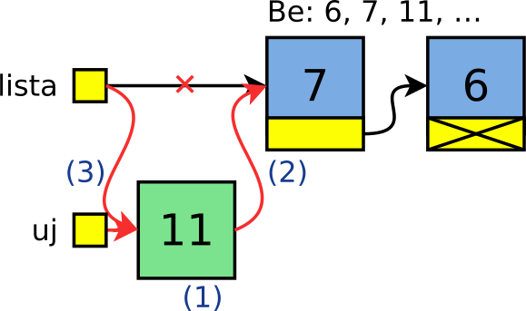

Gyakorlat, 11. hét: láncolt listák I.
Czirkos Zoltán · 2015.02.18 · Frissítve: 2015.02.15
Láncolt listák építése és kezelése.
Láncolt listák használata. Az óra célja az, hogy mindenki gyakorlatot szerezzen a listák használatában – különösen abban, hogyan kell a pointereket az egyes beszúrás, törlés stb. műveleteknél állítani. Ehhez minden esetben javasolt rajz készítése!
Felkészülés a gyakorlatra:
- A listákról szóló előadás anyagának megértése.
- A dinamikus memóriakezelésről szóló előadás átismétlése.
1Milyen adatszerkezet?
Gondoljuk végig, az alábbi problémákhoz milyen adatszerkezetet érdemes használni.
Megoldások
- Egy program számokat olvas be, amelyek közül ki kell írni az átlagnál kisebbeket.
Nem tudjuk, hány szám lesz.
Ehhez a számokat el kell tárolnunk, mivel az összes szám ismeretében tudjuk meg az átlagot, és akkor kezdhetjük csak el a kiírást. Láncolt listát kell alkalmazni, ha nem szeretnénk minden számnál újra és újra nyújtani, lemásolni a tömböt.
- Egy program számokat olvas be, és a beolvasottak közül csak a prímszámokat
írja ki.
Ehhez nem kell eltárolni a számokat, így a kérdés értelmetlen.
- Számokat olvasunk be, és visszafelé sorrendben ki kell írni az átlagnál kisebbeket.
Láncolt lista. Két lehetőségünk van: duplán láncolt listát használunk, mert visszafelé is szeretnénk haladni rajta; vagy egyszeresen láncoltat használunk veremként, hiszen annak eleve adott ez a tulajdonsága, hogy fordított sorrendben látszanak a betett elemek.
- Számokat olvasunk be, maximum százezret. Ki kell írni az átlagnál kisebbeket.
Ehhez ugyan jó lenne a tömb, de ha arra számítunk, hogy jóval kevesebb szám lesz csak, akkor pazarlás a 100000 elem, és így jobb a láncolt lista. (Különösen igaz ez akkor, ha nem csak számok tárolandók, hanem valami nagyobb adatok.)
- „Lemmings” játékot írunk. Egy bejáraton besétálnak a lemingek, akik egy adott időt
töltenek a pályán, mindenféle dolgokat csinálva. A sok leming közül némelyek kimennek
a kijáraton, mások pedig feláldozzák magukat a többiekért.
Láncolt lista, mivel folyton változik a számuk. Érdemes duplán láncoltat csinálni, ugyanis gyakori művelet a törlés is, és az egyszerűbb duplán láncolt listán.
- Be kell olvasnunk egy tetszőlegesen hosszú sort a bemenetről (karakterek enterig).
Dinamikus tömb, amelyet időnként átméretezünk. A listás megoldás hatalmas pazarlás lenne (minden karakter mellé egy pointer!), és a keletkező adatszerkezetet nem tudnánk sztringként sem használni sehol.
- A programunk egy közlekedési társaság buszjáratait tárolja. Minden járatnak van egy
száma, illetve van két végállomása, és közte tetszőlegesen sok megálló.
Fésűs lista, azaz listák listája. A „külső” listában a buszjáratok vannak, amelyekhez járatszámok, és darabonként egy megállólista („belső” listák) tartoznak.
- Amőba játékot írunk. A 13×13-as pályára a játékosok felváltva
oésxjeleket tesznek, amelyek száma így változik. Nem tudjuk előre, mennyi lesz, hiszen lehet hogy hamar vége van a játéknak, lehet mindkét játékos ügyes, és szinte megtelik a pálya.Átverés, ez 13×13-as tömb. Ha a letettoésxbábukat listában tárolnánk (mindegyik mellé felírva, hogy mely (x;y) koordinátára kerültek), akkor borzasztóan elbonyolódna egy elem „indexelése”, és így pl. a játékállás ellenőrzése. - Beolvasunk számokat a billentyűzetről, és meg kell mondanunk, hogy melyik szám hányszor szerepelt.
Ez egy lista, legalábbis jelenlegi ismereteink szerint. Ha egy új szám jön, és még nincs a listában, akkor felvesszük; ha már benne van, akkor csak növeljük a hozzá tartozó számlálót. Mivel nem tudjuk, hány szám lesz, ezért a tömb itt nem jó.
- Beolvasunk karaktereket a billentyűzetről, és meg kell mondanunk, hogy melyik kisbetű (abc…z) hányszor szerepelt.
Ez viszont tömb. Mivel a számolandó elemek száma előre ismert és kicsi (mindössze
'z'-'a'+1=26darab), nem érdemes a listával bajlódni.
2Számok listában
Írjunk programot, amely a billentyűzetről számokat olvas be, egészen 0-ig. Írjuk ki ezután a beolvasott számok közül azokat, amelyek az átlagnál kisebbek! A sorrend nem számít.
Megoldás
Tudjuk, hogy a számokat el kell tárolni, mivel csak a legutolsó szám után derül ki az, hogy melyeket kell kiírni. A „tetszőlegesen sok” miatt listát kell alkalmaznunk. Kérdés, hogy egyszeresen vagy kétszeresen láncolt kell legyen. Mivel a kiírás sorrendje nem kötött, válasszunk egy egyszeresen láncolt listát, annak is a legegyszerűbb beszúró függvényét: a lista elejére beszúrást!
A fentiek alapján a lista:
typedef struct Szam {
int szam;
struct Szam *kov;
} Szam;
A főprogram szinte nem különbözik attól, mintha tömbbel csinálnánk:
int main(void) {
Szam *lista=NULL, *iter;
int beolv;
double atlag;
scanf("%d", &beolv);
while (beolv!=0) {
lista=elejere(lista, beolv);
scanf("%d", &beolv);
}
atlag=listaatlag(lista);
for (iter=lista; iter!=NULL; iter=iter->kov)
if (iter->szam<atlag)
printf("%d ", iter->szam);
felszabadit(lista);
return 0;
}
Ha nem használnánk külön változót a beolvasott számnak, hanem egyenesen a listába szeretnénk beolvasni, akkor itt most nagy bajban lennénk. Ugyanis a beolvasás előtt már létre kellene hozni egy listaelemet, amit aztán ki kellene törölni, ha nullát olvastunk be.
A listába beszúrás: mindig az elejére tesszük az új számot (ezért amúgy fordított sorrendben lesznek benne):

/* uj elemet szur be a megadott lista elejere.
* visszater az uj, megvaltozott lista eleje
* mutatoval. a hasznalata:
* l = beszur(l, 5);
*/
Szam *elejere(Szam *lista, int szam) {
Szam *uj=(Szam*) malloc(sizeof(Szam)); /* 1 */
uj->szam=szam;
uj->kov=lista; /* 2 */
return uj; /* 3 */
}
A lista elemeinek átlaga végülis ugyanolyan, mintha tömbünk lenne. Csak itt meg is kell számolnunk az elemeket:
/* a megadott listan levo szamok atlagat adja */
double listaatlag(Szam *lista) {
Szam *iter;
double szum=0;
int db=0;
for (iter=lista; iter!=NULL; iter=iter->kov) {
szum+=iter->szam;
db++;
}
return szum/db; /* double/int oke */
}
A teljes program letölthető ide kattitva: szamoklistaban.c.
3Madárnyelv számokkal és listával
Adott egy egész számokat tartalmazó lista. Írjunk be minden páros szám után egy nullát és a számot magát. Vagyis legyen a 2,3,4,5 listából a 2,0,2,3,4,0,4,5 lista.
Megoldás
Ez könnyű, hiszen beszúrni egy adott elem után könnyen tudunk. Végigmegyünk a listán, ha az páros, akkor beszúrunk utána egy nullát és saját magát. Vigyázat, két buktató is van! Ha ilyen sorrendben tennénk, akkor fordított lenne az eredmény – vagyis előbb saját magát, és utána a nullát kell beszúrni. (Ehhez inkább külön változókat használ a lenti kód.) Figyelni kell arra is, hogy a beszúrás után az iterátort léptessük, nehogy a következő körben megtaláljuk a nullát vagy a beszúrt számot (hiszen ezek is párosak). Kettővel léptetjük előre, ezáltal olyan állapotot előidézve, mintha a ciklusváltozó a beszúrt elemre mutatna.
/* A listában minden páros szám után beszúr egy nullát,
* és még egyszer magát a számot.
*/
void lista_202(Szam *lista) {
Szam *iter;
for (iter=lista; iter!=NULL; iter=iter->kov)
if (iter->szam%2==0) {
Szam *ujszam, *ujnulla;
ujszam=(Szam*) malloc(sizeof(Szam));
ujszam->szam=iter->szam;
ujszam->kov=iter->kov;
ujnulla=(Szam*) malloc(sizeof(Szam));
ujnulla->szam=0;
ujnulla->kov=ujszam;
iter->kov=ujnulla;
/* 2-t ugrunk, es utana meg jon a 3. ugras */
iter=iter->kov->kov;
}
}
Az 1-2. lépést, vagyis a szám és a pointer másolását összevonhatnánk egy lépésbe:
*ujszam = *iter;
Struktúra értékadással, ugyanis mind a számot, mind a pointert, vagyis az egész struktúrát másoljuk ott.
A teljes program letölthető innen: lista202.c.
4Adott tulajdonságú elemek törlése
Adott egy szavakat tartalmazó lista. Töröljük ki belőle a négybetűseket!
Megoldás
Itt figyelnünk kell arra, hogy előfordulhat, a lista első elemét kell törölni. Ilyenkor pedig a lista eleje mutató is megváltozhat. A következő további esetek lehetségesek:
- Miután töröltük az első elemet, lehet hogy a második elem is négybetűs. Ekkor azt is törölni kell. Viszont az az első helyre került – vagyis az első elem vizsgálata nem csak egy feltétel, hanem egy ciklus. Amíg a lista elején négybetűs van, addig töröljük azt.
- Mindeközben elfogyhat a lista – hiszen lehet az is, hogy csak négybetűs szavakat tartalmazott. Sőt az is, hogy eleve üres volt.
Ez a ciklus így néz ki:
while (lista!=NULL && strlen(lista->szo)==4) {
Szo *torlendo=lista;
lista=torlendo->kov;
free(torlendo);
}
Itt kihasználjuk az && operátor rövidzár tulajdonságát. Ha a pointer
NULL, akkor már a lista->szo kifejezés ki sem értékelődik, hiszen az egész kifejezés
értéke csak HAMIS lehet. Ez fontos, hiszen ez biztosítja azt, hogy ne dereferáljuk a
NULL pointert! Emiatt a kifejezés két oldala nem cserélhető meg!
Ezután két eset lehetséges:
- A lista üressé vált, és nincs további teendőnk.
- A lista nem lett üres, amely esetben azonban az elején biztosan nem négybetűs szó van. Az már meg fog maradni, így a lista elejét mutató pointer nem módosul tovább.
Mivel minden törlendő elemet megelőző pointerét kell módosítani a törlésnél, így vagy
azt keressük meg, hogy mely elemeknél kell törölni a következőt, vagy lemaradó pointert
használunk. Alább a lemaradó pointeres megoldás látható. Figyelni kell, ha egy adott elemet
törlünk, akkor a lemaradó pointer nem mozdul, hanem csak az iter!
Amúgy pedig együtt mozognak. A programrész:
if (lista!=NULL) {
Szo *lemarado=lista;
Szo *iter=lista->kov;
while (iter!=NULL) {
Szo *kovetkezo=iter->kov;
if (strlen(iter->szo)==4) {
lemarado->kov=kovetkezo; /* 1 */
free(iter); /* 2 */
} else
lemarado=iter;
iter=kovetkezo; /* 3 */
}
}
A teljes program letölthető innen: torles11.c.
5Megfordít
Fordítsunk meg egy listát az elemei átláncolása által! Írjunk egy programot, amely beolvas számokat 0-ig, és kiírja a keletkező listát eredeti sorrendjében (és ezáltal a számokat eredeti sorrendjükben), továbbá kiírja a megfordítottat is.
Megoldás
Ez egyszerűbb, mint gondolnánk. Ha mindig a lista elejéről elveszünk egy elemet, és a megfordított lista elejére betesszük azt, akkor a lista éppen megfordul! Az eredeti lista szép lassan elfogy, és mikor ez megtörténik, akkor a keletkező lista kész.
/* Megfordit egy parameterkent kapott listat, es visszater
* a megforditott valtozattal.
* Vigyazat, az eredeti lista elveszik! A fuggveny nem uj
* listat epit, hanem az eredeti lista elemeinek felhasznalasaval
* epiti az uj listat. Igy a kapott pointert legjobb az eredeti
* lista eleje pointerbe visszairni:
* szamok = lista_megfordit(szamok);
*/
Szam *lista_megfordit(Szam *lista) {
Szam *eredeti=lista;
Szam *megforditott=NULL;
while (eredeti!=NULL) {
Szam *atrakott=eredeti, *kovetkezo=eredeti->kov;
atrakott->kov=megforditott; /* uj elejere be */ /* 1 */
megforditott=atrakott; /* 2 */
eredeti=kovetkezo; /* regibol kihagy */ /* 3 */
}
return megforditott;
}
A teljes program letölthető innen: listamegfordit.c.